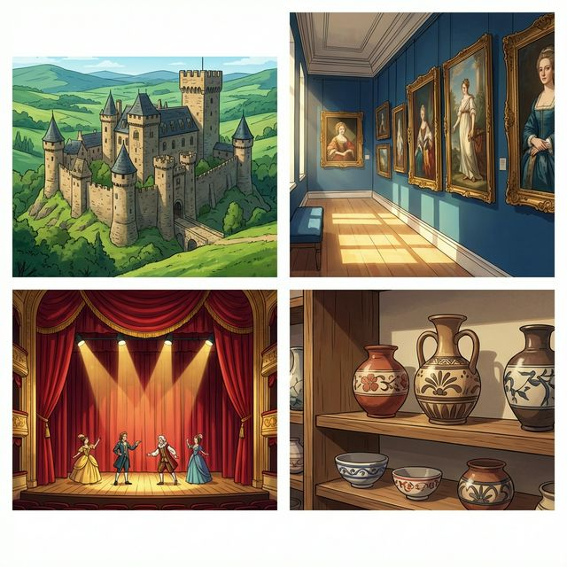
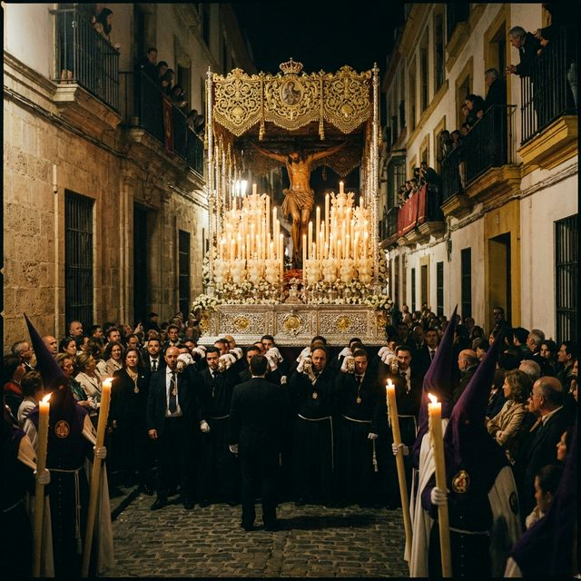

Cervantes: §13 여가활동 심화: 전통 예술 및 §14 축제와 전통 심화: 종교 및 역사적 배경
Raíces y pasiones (뿌리와 열정)
스페인 문화의 깊이는 수천 년의 역사와 다양한 민족의 흔적이 섞여 만들어진 층위에 있습니다. 단순히 축제를 즐기는 것을 넘어, 그 이면에 담긴 역사적 복잡성과 종교적 경건함, 그리고 예술적 승화 과정을 이해할 수 있을까요? 이번 장에서는 유네스코 인류 무형문화유산인 '플라멩코'의 깊이 있는 어휘, 스페인의 중요한 종교 행사인 '세마나 산타(Semana Santa)', 그리고 지식이나 기술을 나타내는 'saber' 동사를 배움으로써 스페인의 영혼에 한 걸음 더 다가갑니다.
학습 목표
- 예술 양식, 역사적 시대 및 종교 관련 심화 어휘 15개 이상 습득
- 'Saber(알다)' 동사의 활용 (지식, 기술, 정보)
- 'Saber'와 'Conocer'의 명확한 차이점 구분 및 실전 사용
- 스페인의 가톨릭 유산과 세마나 산타(Semana Santa)의 문화적 의미 이해
스페인의 역사와 예술적 성취를 보여주는 요소들입니다. 고풍스러운 박물관과 유적의 이미지를 보며 어휘를 익혀보세요.

| # | Spanish | English Bridge | Korean Tip |
|---|---|---|---|
| 1 | el patrimonio | Patrimony / Heritage ✅ | 유산 / 자산 |
| 2 | el flamenco | Flamenco ✅ (Perfect Cognate) | 플라멩코 |
| 3 | la escultura | Sculpture ✅ | 조각 |
| 4 | la arquitectura | Architecture ✅ | 건축 |
| 5 | la literatura | Literature ✅ | 문학 |
| 6 | la historia | History ✅ | 역사 |
| 7 | el castillo | Castle ✅ | 성 |
| 8 | la catedral | Cathedral ✅ | 대성당 |
| 9 | la pintura | Painting ✅ | 회화 / 그림 |
| 10 | el museo de arte | Art Museum ✅ | 미술관 |
✅ 표시된 단어는 영어와 어원의 뿌리가 같은 'Cognates'입니다.
문화적 지식과 능력을 표현하고 역사에 대해 이야기할 때 사용하는 패턴입니다.
A. 지식과 능력 (Saber vs Conocer)
- Sé bailar flamenco un poco. (I know how to dance flamenco a little. / 플라멩코를 조금 출 줄 알아요.)
- ¿Sabes a qué hora empieza la procesión? (Do you know what time the procession starts? / 행렬이 몇 시에 시작하는지 아니?)
- No sé mucho de historia de España. (I don't know much about Spanish history. / 스페인 역사에 대해서는 잘 몰라요.)
- Quiero conocer más tradiciones. (I want to know/experience more traditions. / 더 많은 전통을 경험하고 싶어요.)
B. 종교 및 역사적 배경 (Semana Santa)
- Es una tradición muy antigua. (It is a very ancient tradition. / 이것은 매우 오래된 전통입니다.)
- La Semana Santa es muy emocionante. (Holy Week is very moving/emotional. / 성주간은 매우 감동적입니다.)
- El paso (float) es una obra de arte. (The float is a work of art. / '파소'는 하나의 예술 작품입니다.)
- La gente tiene mucha fe. (People have a lot of faith. / 사람들은 깊은 신앙심을 가지고 있습니다.)
'Saber'와 'Conocer'의 차이점을 명확히 하고, 'Saber'의 변화를 익혀봅시다.
정보, 지식, 혹은 '할 줄 알다'라는 기술을 나타낼 때 사용합니다.
| 인칭 | Saber | 영어 매핑 (to know/can) |
| :--- | :--- | :--- |
| Yo | sé | I know |
| Tú | sabes | You know |
| Él/Ella/Ud. | sabe | He/She/You know |
| Nosotros/as | sabemos | We know |
| Vosotros/as | sabéis | You all know |
| Ellos/Ellas/Uds. | saben | They/You all know |
스페인에서 가장 장엄한 종교 행사, 성주간을 알아봅시다.

La Semana Santa (Holy Week) es una de las tradiciones más profundas de España. Se celebra en todas las ciudades, 하지만 las de Sevilla, Málaga y Valladolid son las más famosas. Las hermandades (brotherhoods) llevan los pasos (muebles grandes con esculturas religiosas) por las calles en procesiones solemnes.
El silencio, la música de las bandas와 'Saetas' (전통 노래)가 어우러져 신비롭고 감동적인 분위기를 자아냅니다. Muchos españoles, aunque no sean muy religiosos, respetan y valoran esta tradición por su belleza artística y su importancia histórica. Es un momento en que el pasado와 현재가 공존하는 모습을 볼 수 있습니다. ¡Es una experiencia que te hace sentir el corazón de España!
[한국어 번역]
세마나 산타(성주간)는 스페인의 가장 깊은 전통 중 하나입니다. 모든 도시에서 기념되지만, 세비야, 말라가, 바야돌리드의 행사가 가장 유명합니다. 형제회(hermandades)들은 종교적 조각상이 안치된 거대한 가마인 파소(paso)를 메고 엄숙한 행렬을 지어 거리를 지납니다.
침묵, 밴드의 음악, 그리고 '사에타(Saeta)'라는 전통 노래가 어우러져 신비롭고 감동적인 분위기를 자아냅니다. 많은 스페인 사람은 설령 독실한 신자가 아니더라도 이 전통의 예술적 아름다움과 역사적 중요성 때문에 이를 존중하고 소중히 여깁니다. 과거와 현재가 공존하는 모습을 볼 수 있는 시간이죠. 스페인의 심장을 느끼게 해주는 경험입니다!
A. Saber or Conocer? (알맞은 동사를 선택하세요)
B. Saber 동사 변형 연습 (괄호 안의 주어에 맞게 변형하세요)
C. 번역 연습 (Saber/Conocer 및 문화 표현을 활용하세요)
Una noche de flamenco en Granada (그라나다의 플라멩코 밤)
Ayer fui a un espectáculo de flamenco en el barrio del Sacromonte. Fue una experiencia increíble. Antes, yo no conocía mucho este arte, 하지만 ahora sé que es pura pasión. Los bailarines zapateaban con mucha fuerza y el sonido de la guitarra era muy emocionante. He hablado con el guitarrista y él me ha dicho: "Para tocar el flamenco, hay que conocer el alma de España". Yo sé que todavía tengo mucho que aprender, 하지만 me gustaría conocer más sobre la literatura y la pintura española también. El patrimonio cultural de este país es infinito. ¡Mañana voy a visitar el museo para saber más sobre la historia!
Questions:
1. 주인공은 어제 어디에 갔나요? (Where did the protagonist go yesterday?)
- ............................................................
2. 기타리스트는 플라멩코를 연주하기 위해 무엇을 알아야 한다고 했나요? (What did the guitarist say one must know to play flamenco?)
- ............................................................
[한국어 번역]
어제 저는 사크로몬테 지구에서 열린 플라멩코 공연에 갔습니다. 믿을 수 없는 경험이었어요. 전에는 이 예술을 잘 몰랐지만, 이제 이것이 순수한 열정이라는 것을 압니다. 무용수들은 매우 힘차게 발을 굴렀고 기타 소리는 정말 감동적이었어요. 기타리스트와 대화를 나눴는데 그는 이렇게 말했습니다. "플라멩코를 연주하려면 스페인의 영혼을 알아야 합니다." 저는 아직 배울 게 많다는 걸 알지만, 스페인 문학과 회화에 대해서도 더 알고 싶어요. 이 나라의 문화유산은 무한합니다. 내일은 역사에 대해 더 알기 위해 박물관에 갈 거예요!
Hablando de la Semana Santa (세마나 산타에 대해 이야기하기)
Situación: Clara le explica a su amigo de intercambio, Jin, qué es la Semana Santa.
상황: 클라라가 교환학생 친구인 진에게 세마나 산타가 무엇인지 설명해줍니다.
| Spanish | Korean |
|---|---|
| Jin: Clara, ¿qué es este ruido de música y trompetas? | 진: 클라라, 이 음악이랑 나팔 소리는 뭐야? |
| Clara: Es una procesión de Semana Santa. ¿No la conoces? | 클라라: 세마나 산타 행렬이야. 몰랐니? |
| Jin: No, no sé mucho sobre las tradiciones religiosas de aquí. | 진: 응, 여기 종교 전통에 대해서는 잘 몰라. |
| Clara: Es muy bonito. Las hermandades llevan los 'pasos' por la ciudad. | 클라라: 매우 아름다워. 형제회들이 '파소'를 메고 도시를 돌아다녀. |
| Jin: ¡Guau! ¿Y tú conoces a alguien que participe? | 진: 와! 너 참여하는 사람 알아? |
| Clara: Sí, mi abuelo participa todos los años. Él sabe mucho de la historia local. | 클라라: 응, 우리 할아버지가 매년 참여하셔. 지역 역사에 대해 아주 잘 아시지. |
| Jin: Me gustaría saber más. ¿Podemos ver la procesión juntos? | 진: 나도 더 알고 싶어. 우리 같이 행렬 볼 수 있을까? |
이번 장의 핵심 내용을 복습해 보세요.
- [ ] 예술, 유산 및 역사와 관련된 고급 어휘 10개 이상을 이해하나요?
- [ ] 'Saber'의 1인칭 단수 변화 'sé'를 정확히 알고 있나요?
- [ ] 'Saber'와 'Conocer'의 사용 상황을 명확히 구분할 수 있나요?
- [ ] 세마나 산타의 종교적, 예술적 의미를 이해했나요?
¡Excelente profundidad! 오늘 여러분은 스페인의 화려함 뒤에 숨겨진 깊은 '영혼'에 대해 배웠습니다. 'Saber'와 'Conocer'를 통해 여러분의 지적, 경험적 세계를 표현할 수 있게 되었고, 역사와 종교의 흐름을 통해 스페인을 더 입체적으로 이해하게 되었습니다. 문화는 언어의 가장 큰 교과서입니다. 마지막 대장정을 앞두고 있는 다음 장에서는 우리의 학습 여정을 마무리할 '도시 생활, 사회 문제 및 미래의 우리(A2)' 섹션으로 이어가겠습니다. ¡Sigue con esta pasión!
6. Práctica - A. Saber or Conocer?
1. sé / 2. conoces / 3. conocemos / 4. sabe / 5. saben
6. Práctica - B. Saber 동사 변형 연습
1. sé / 2. sabe / 3. sabemos / 4. sabes / 5. saben
6. Práctica - C. 번역 연습
1. Sé bailar esa canción.
2. ¿Conoces el Museo del Prado?
3. Quiero ver el espectáculo de flamenco una vez más.
4. Sabemos que la historia de España es muy interesante. (또는 Sabemos que es muy divertida la historia de España.)
5. La Semana Santa es muy importante en España.
7. Lectura Questions
1. 사크로몬테 지구의 플라멩코 공연 (Espectáculo de flamenco en el barrio del Sacromonte).
2. 스페인의 영혼 (El alma de España).